Plan
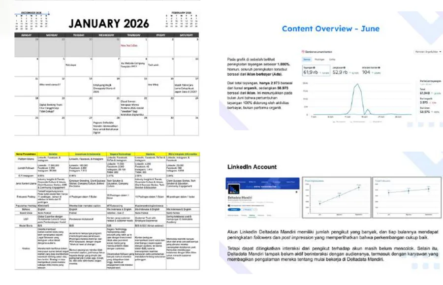
Strategy & campaigns
Marketing plans, editorial calendars, KOL programs and integrated campaigns.
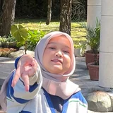
Hi, I'm Jihan!Digital communication and marketing professional with 5 years across government, tech, media and fashion. Now shaping public education on waste at Indonesia's Ministry of Environment.
Looking for Corporate Communication, Digital Marketing Communication and Communication Specialist roles
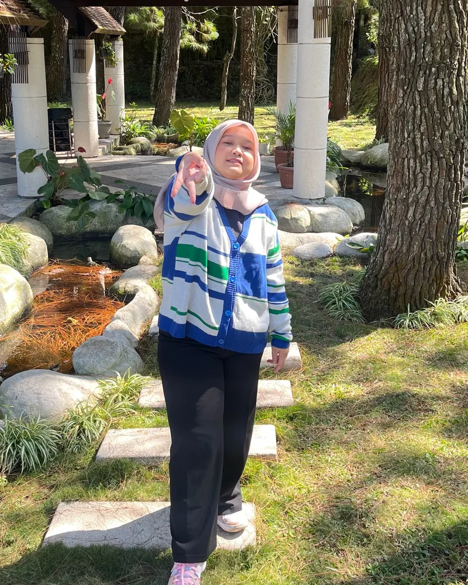
Now at Waste Crisis Center, KLH
Marketing plans, editorial calendars, KOL programs and integrated campaigns.
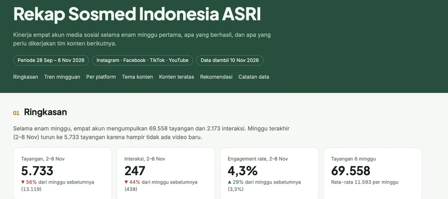
Monitoring, sentiment analysis and performance dashboards, like the weekly recap of Indonesia ASRI's four accounts.
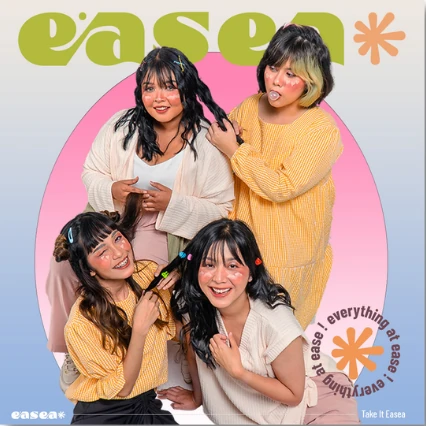
Copywriting, short video, on-camera talent, voice-over and design.
Clicks and traffic first, then audience growth, each with where it happened.
Four roles, one project each in depth: the problem, what I did, what the data showed and the result.
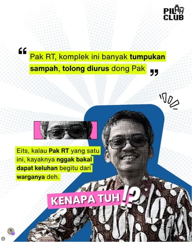
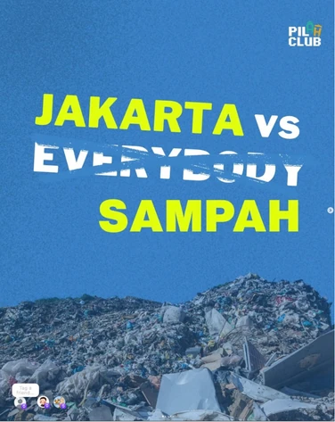
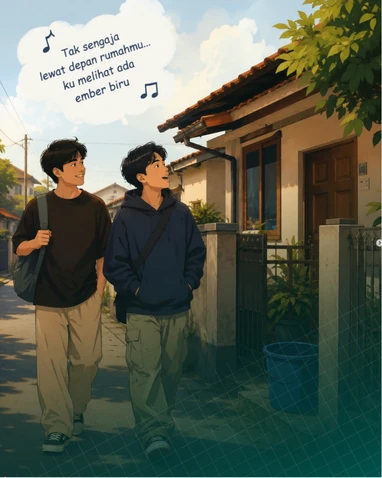
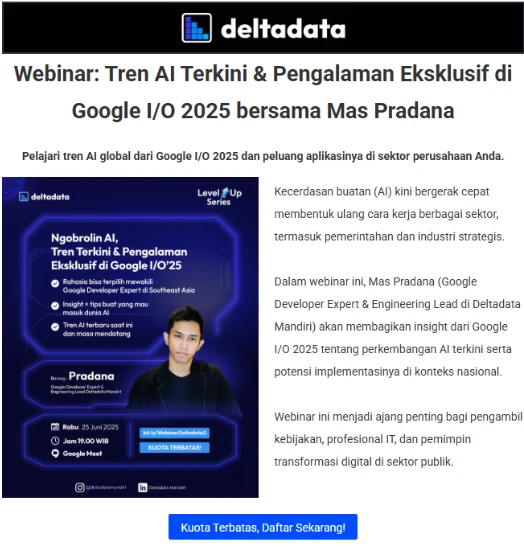
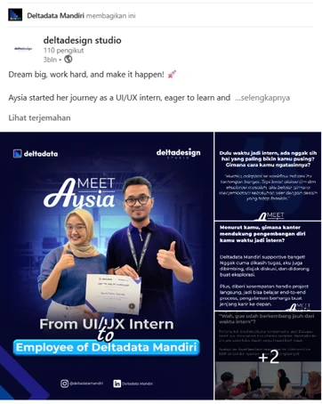
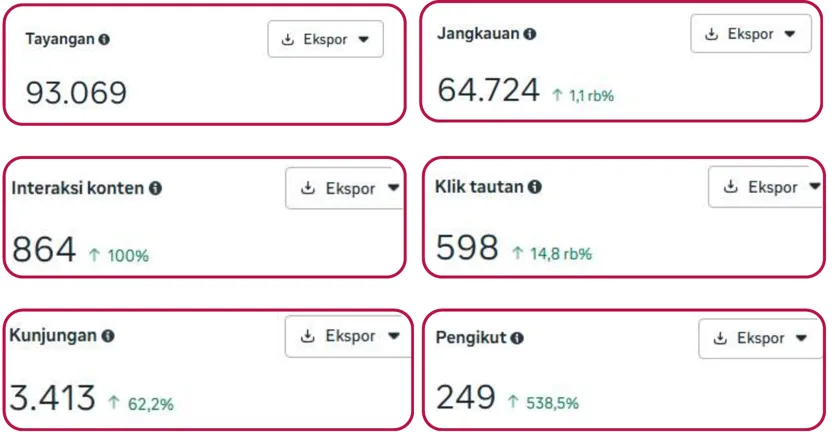
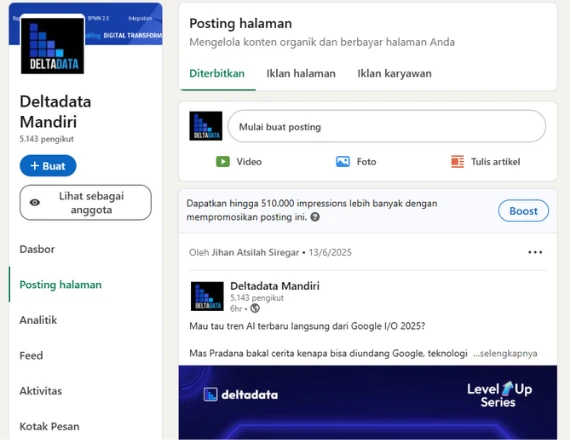
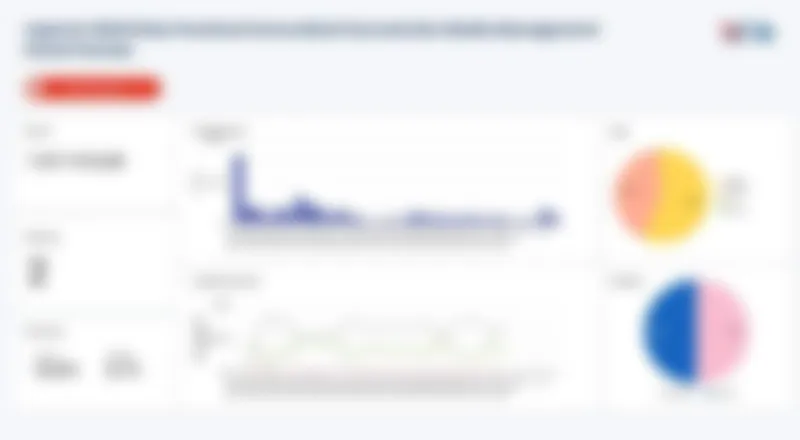
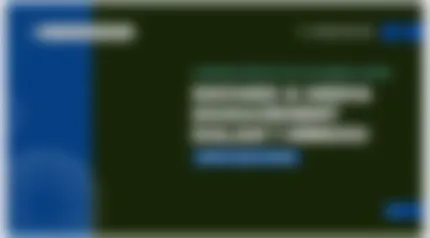
Internal documents, blurred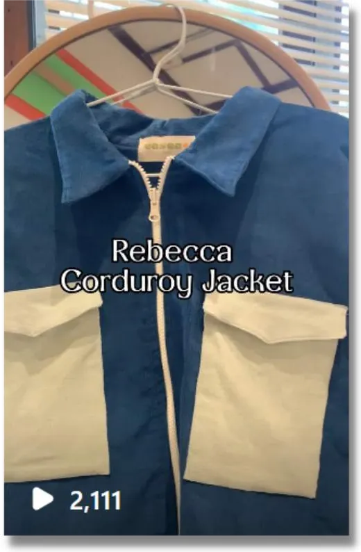
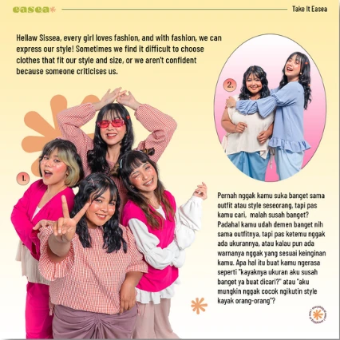
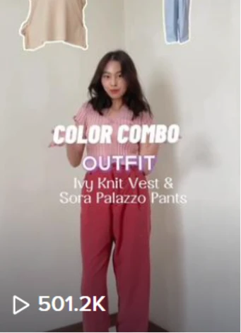
Talent and voice-over work, and videos I edited for entertainment and education. Each opens on Instagram.
Peer-reviewed article that maps how audiences talk to each other about online gambling in YouTube comment threads, using social network analysis. It reflects the research side of my Master's in Communication Studies.
Read the article ↗I use AI to speed up research and production, and I review and edit every output myself.
Image generation for content visuals, and topic research before content planning.
Video creation and web tools, such as a social media monitoring website. I built this portfolio website and performance dashboards like the six-week Indonesia ASRI social media recap with it.
Turning still images into short videos for social media.
Hiring for corporate communication, digital marketing or social media? I'd be glad to talk about how I can help your team.